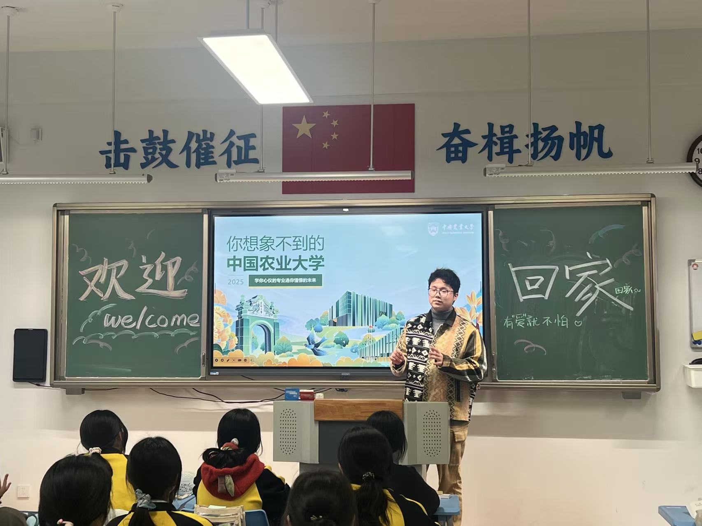
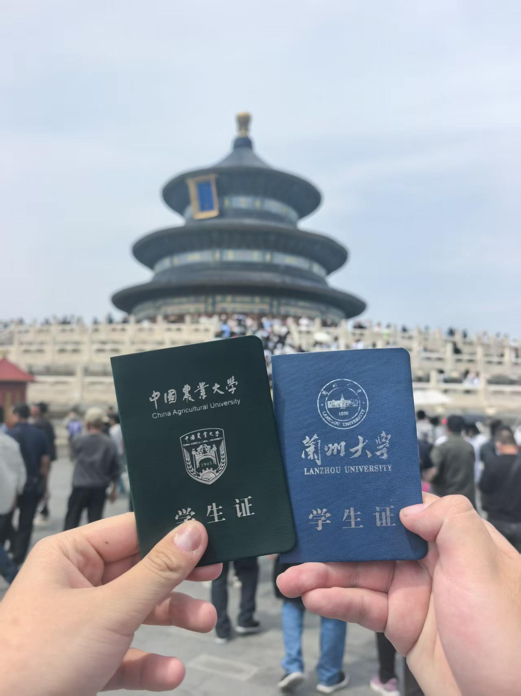

Is There Freedom
on the Other Side of the Sea?
Is there freedom on the other side of the sea?
When you leave Yantai, the place you once tried so hard to escape for the sake of your dreams, the home you now dream of and miss so deeply, do you ever feel a twinge of regret, a sadness you can barely put into words?
I often ask myself that. I’m in Beijing now, a full 527 kilometers from home. One day I put on my headphones, and the first song that came up on shuffle was “Five Hundred Miles.” In it, to my surprise, I heard the whistle of a train pulling out of a station. I heard the waves breaking against Yantai’s Yellow Sea Pearl, too. One after another, the waves struck a chord in me, drawing a mournful tune from the strings of an old guqin.
On Wednesday, June 10, 2026, at six in the evening sharp, the geography exam, the final subject in Shandong’s 2026 gaokao (China’s national college entrance exam), officially ended. On Tuesday, June 10, 2025, at six in the evening sharp, the geography exam brought that year’s gaokao in Shandong to a close.
That June, I was still in Beijing. I’d just finished my last class of the day at China Agricultural University. As I walked out of the classroom, it suddenly came back to me how I’d felt a year earlier, and all at once the sadness was almost too much to bear. Was it the sea breeze, which I hadn’t felt in who knows how long? Or was it those friends I used to fool around with? I couldn’t even remember the last time we’d all been together.
The spring breeze brushed my face. Every time we meet again, it takes away a little of my life, a little of my time, a few memories I hold dear. The spring sun was warm. It was the sort of day that should have made me happy, yet somehow I couldn’t smile.
Then let’s go home.
In July, I rode the midsummer evening breeze back to the place I still went to in my dreams. The very next day, I went back to my old high school, Yantai Foreign Language Experimental School. I still called it that out of habit. In just one year, the school had moved and become Yantai Zhiliang High School. The entrance had changed, too. A grand Chinese archway stood in place of the old campus’s plain gate. For all its grandeur, it did little to settle the heart of someone who had come home in earnest.
Well, I might as well go in. I had a talk to give, after all. My teacher had asked me to do it.
The same sun shone down on the brand-new running track. It couldn’t come close to the molten gold beneath the gate at our coming-of-age ceremony. The sea breeze had the same smell, but now there was something sharp about it. There’s an old saying, “Love the house, and you’ll love even the crow on its roof.” Maybe I felt that the past had turned its back on me, and in my bitterness I’d come to “hate the house, crow and all.”
My teachers were doing well, though a few had left or retired. I didn’t get to see my dear Ms. Wang Fei, who taught me Chinese in high school and guided me through those years. She once looked at a student whose grades were near the bottom and said just four words, “I believe in you.” Those words kept that student working hard for three years. Her kind smile, perhaps, was like the sea, with room for every river.
Up at the front, in the classroom, there was still that old air of study and the smell of ink. Only now the person standing at the lectern and sharing his own experiences was me. I was the “old senior” who’d already left the school.

My roommates were all away in other places. None of them had come back …
I’m sorry. I don’t think I can keep writing.
It takes a thousand years for a sea to turn into mulberry fields. How could this place forget me after just one year away?
When I look at these words I’ve written, it feels more like a film playing in front of me than an essay. There’s joy and laughter. Then my eyes sting, and I’m sad. Life is a journey we walk more and more on our own. The scenery grows more intricate along the way. What’s rare is to have had people beside you who once shared the view with you. Now we’ve gone our separate ways. The road is long, and none of us knows what lies ahead. Later, I found that just getting together for dinner took everything we had. For one meal, you’d have to skip your competition, and I’d have to skip my exam. Yet I can never forget the table that used to belong to the twelve of us. Back then, all it took was someone calling out and everyone would be there. “I pound all the railings with my hand, and no one understands.” What I’d call a feast is that plain white steamed bun at our table, the red chili oil from a jar of Lao Gan Ma that we fought over to mix into our rice, the KFC chicken drumsticks we smuggled in from outside the school gates. The Japanese and Korean food at the big shopping centers could never compare.
The sea in Yantai never rests. It’s still singing.
Yuan’er once dreamed of writing stories and went all the way to Lanzhou to study business administration. Dazhong, always caught up in one little thing or another, got his wish and became a police officer. Zhang Enhao, whom we jokingly called “the heir to a business empire,” ended up putting down roots in Yantai. Our school has moved, many of our dear teachers have retired, and our old class is scattered. It’s hard to get everyone together again. And yet we stayed forever at the foot of Mount Ta. Our souls in Beijing, our dreams in Lanzhou, our thoughts in Jinan, and our feelings in Yantai will linger here, always.

Is there freedom on the other side of the sea? The sea wind roars, and the waves come on, one after another.
Is there freedom on the other side of the sea? Beijing’s nights are still bright with lights, and Yantai’s mornings are as busy as ever.
Is there freedom on the other side of the sea? I left with my dreams, but my dreams can’t take the place of the longing I feel.
And yet I believe that in ten years we’ll hurry into our lives in 2036. In fifteen, we’ll each walk our own way through 2041. In twenty, we’ll rise and fall with whatever life brings in 2046. But whenever old friends get together again, we’ll always find ourselves living in 2022, the year we first met in our first year of high school, the year our story began.
To our high school. To the days when we were young.